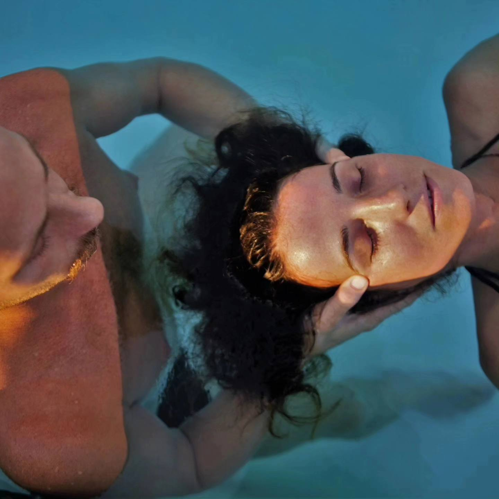
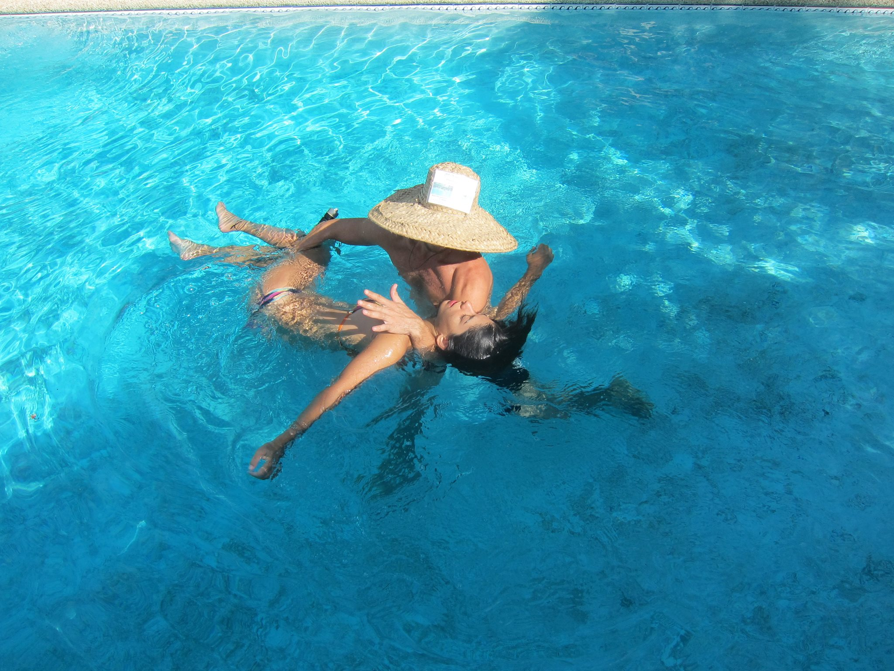
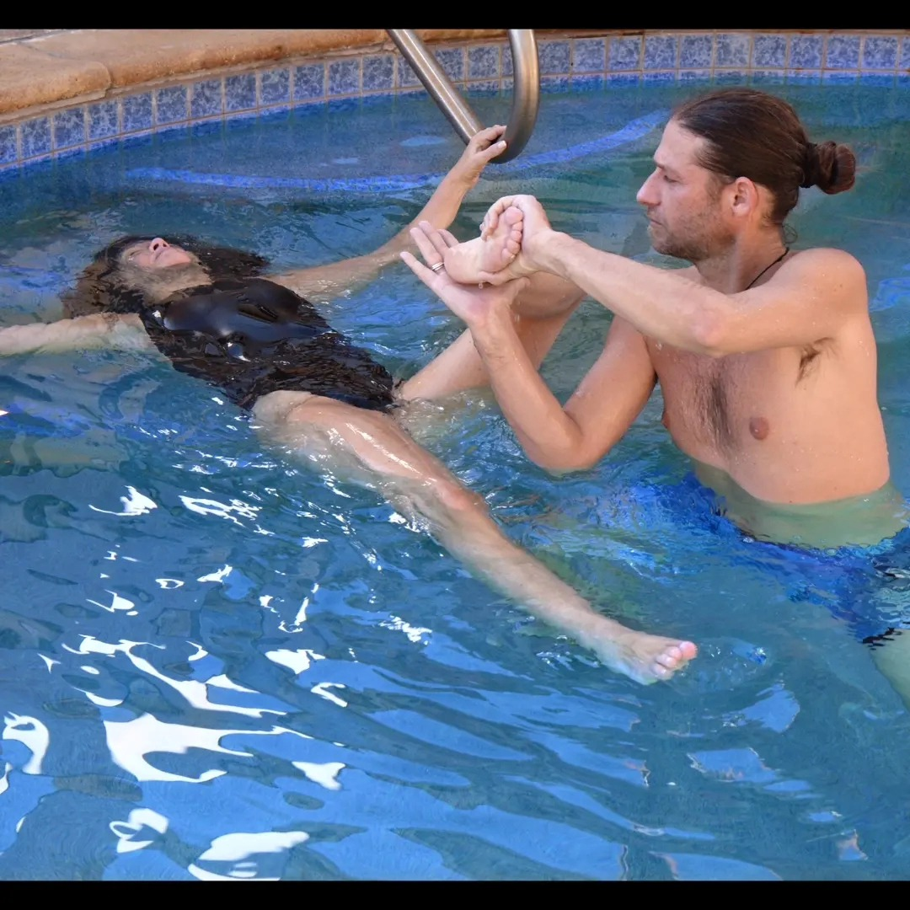

What is Watsu and what are some benefits:
Watsu is being stretched, twisted, cradled and/or having pressure points massaged while in warm water. Benefits include having reduced anxiety or stress, better mobility, decreased pain in joints and relief for people with fibromyalgia.
Watsu Excersises:
-
Pressure Point Massage:
- Having pressure points massaged will help release and relieve pain, this will lead to a more relaxed state.
- 
-
Gentle Twisting and Cradling:
- Gentle twisting of the body can relieve aches, increase mobility and calm your breathing.
- 
-
Stretching:
- Having someone else move your body and stretch it while in water lowers the impact and takes pressure of joints. It is light stretching more for the purpose of rehablitation.
- 